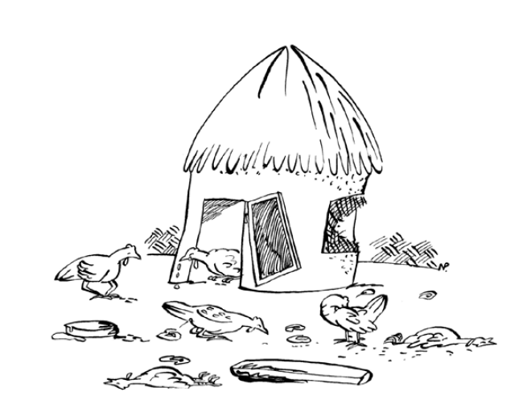

রোগ সর্বত্রই আছে এবং সব বয়সের পাখিদের আক্রমণ করে প্রচুর ক্ষতি করে। যত্নশীল ব্যবস্থাপনা অনেক রোগ প্রতিরোধ করবে এবং চিকিৎসা ও জীবাণুমুক্তকরণের খরচ বাঁচাবে। নিম্নলিখিত উপায়ে মুরগির পালে রোগের প্রবেশ রোধ করা যেতে পারে: » মুরগিকে সঠিক খাবার এবং পরিষ্কার জল দিন, বিশেষ করে ছোট পাখিদের জন্য; » বাতাস এবং বৃষ্টির বিরুদ্ধে আশ্রয় তৈরি করুন; » নিয়মিত ঘর পরিষ্কার করুন এবং মেঝে এবং দেয়ালে চুন দিয়ে ধুয়ে ফেলুন; » প্রয়োজনে নিয়মিত শুকনো আবর্জনা সরবরাহ করুন; » খুব বেশি পাখি একসাথে রাখবেন না; » বিভিন্ন প্রজাতির মুরগি, যেমন মুরগি, টার্কি, কবুতর, হাঁস এবং গিনি ফাউল আলাদা রাখা উচিত; » মা মুরগি ছাড়া প্রাপ্তবয়স্ক পাখিদের থেকে ছানা আলাদা করুন; » সবচেয়ে গুরুত্বপূর্ণ রোগের বিরুদ্ধে ছানাগুলিকে টিকা দিন এবং প্রয়োজনে পুনরায় টিকা দিন; » অসুস্থ পাখিদের আলাদা করে রাখুন এবং চিকিৎসা করুন - যদি ওষুধ পাওয়া না যায় তবে অসুস্থ পাখিদের মেরে ফেলুন; » মৃত পাখিদের পুড়িয়ে ফেলুন বা পুঁতে দিন। যেসব মুরগির সঠিকভাবে পরিচর্যা করা হয় না, তাদের পালে অনেক রোগ হতে পারে 
ছোট ঘর এবং বাইরের জায়গায় অতিরিক্ত মুরগি রাখার ফলে খোঁচা মারার মতো নানাবিধ সমস্যা দেখা দেয়। অতিরিক্ত মুরগি রাখার ফলে মুরগির সার পরিবেশ দূষণের মাত্রা বৃদ্ধি করে এবং এর ফলে রোগের প্রাদুর্ভাব দেখা দিতে পারে। একটি প্রাপ্তবয়স্ক পাখির জন্য কমপক্ষে ৫ বর্গমিটার বাইরের জায়গা প্রয়োজন। অতএব, কেবলমাত্র সেই সংখ্যাগুলি রাখুন যা উপলব্ধ জায়গায় আরামদায়কভাবে মাপসই হয়।
রোগ ছড়াতে বা বিকশিত হতে না দেওয়ার জন্য শুষ্ক এবং পরিষ্কার বাসস্থান অপরিহার্য। পরিষ্কার করার পর মাঝে মাঝে, ঘর এবং আশ্রয়স্থলগুলিকে চুন ধোয়ার মাধ্যমে জীবাণুমুক্ত করা উচিত। যেসব মুরগি খুব পাতলা এবং ডিম বাড়ায় না বা উৎপাদন করে না, সেগুলো জবাই করা ভালো, কারণ তারা রোগ প্রতিরোধ করতে পারে না এবং সুস্থ অবস্থায় হাঁস-মুরগিতে রোগ ছড়াতে পারে। যদি খামারে কোনও রোগ অব্যাহত থাকে, তাহলে পুরো পালকে জনবসতিমুক্ত করুন, কিছু সময়ের জন্য (কমপক্ষে দুই মাস) ঘর পরিষ্কার, জীবাণুমুক্ত করুন এবং বিশ্রাম দিন এবং তারপর পুনরায় মজুদ করুন। একটি সাধারণ জীবাণুনাশকের উদাহরণ চিত্র 57-এ রয়েছে। জীবাণুনাশক কীভাবে ব্যবহার করবেন তার নির্দেশাবলী সাধারণত বোতলে এবং প্যাকেজের সাথে ঢোকানো একটি ছোট কাগজে লেখা থাকে।
অন্যান্য প্রজাতির পাখি অসুস্থতার কোনও লক্ষণ না দেখিয়েও রোগ বহন করতে পারে। উদাহরণস্বরূপ, হাঁস, গিনি ফাউল এবং টার্কি মুরগিতে রোগ ছড়াতে পারে, অথবা এর বিপরীতে। এক প্রজাতি থেকে অন্য প্রজাতিতে রোগ ছড়ানো এড়াতে সবচেয়ে ভালো উপায় হল তাদের আলাদা খাঁচা, ঝুড়ি বা বাড়িতে আলাদা রাখা। গৃহপালিত পাখিদের সর্বদা বন্য পাখি থেকে যতটা সম্ভব দূরে রাখুন। প্রাপ্তবয়স্কদের থেকে বাচ্চাদের মধ্যে রোগ সংক্রমণ এড়াতে ছানা এবং প্রাপ্তবয়স্ক মুরগি একসাথে মিশ্রিত করবেন না। রাস্তার ধারের বা বাজার থেকে প্রজনন স্টক হিসাবে মুরগি কিনবেন না। তারা রোগ বহন করতে পারে। এছাড়াও, আপনি যে মুরগি বাজারে নিয়ে যান এবং কেনা হয় না সেগুলি বাড়ির মুরগিতে ফেরত পাঠানো উচিত নয়।
ভালো খাবার পাওয়া পাখিরা রোগ প্রতিরোধে ভালো ভূমিকা পালন করে। বিশেষ করে ছোট বাচ্চাদের জন্য সম্পূরক খাবার, রোগ প্রতিরোধের অন্যতম গুরুত্বপূর্ণ উপায়। খাবার সবসময় শুষ্ক এবং পরিষ্কার জায়গায় সংরক্ষণ করা উচিত, কারণ এগুলো সহজেই দূষিত হতে পারে এবং রোগ ছড়াতে পারে।
ফাউল কলেরা এবং এভিয়ান ইনফ্লুয়েঞ্জা (AI) এর মতো জলবাহিত রোগের বিস্তার এড়াতে পুকুর নয়, বরং কূপের পরিষ্কার জল গুরুত্বপূর্ণ। যদি পরিবেশে AI এর একটি অত্যন্ত সংক্রামক প্রজাতি থাকে, তাহলে বন্য পাখি দ্বারা দূষিত জল এড়াতে কঠোর সতর্কতা অবলম্বন করা উচিত।
মুরগির ভাইরাসজনিত রোগের চিকিৎসার জন্য কোনও ওষুধ নেই। নিউক্যাসল রোগ এবং ফাউল পক্সের মতো রোগের বিরুদ্ধে নিয়মিত টিকা দেওয়া উচিত।